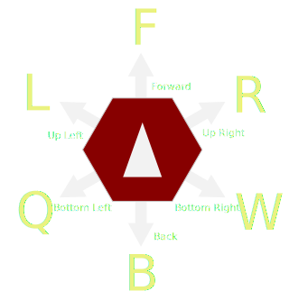
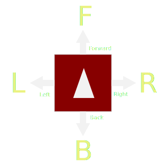

Made by Tom den Ottelander
Enlarging grid. This may take some seconds.
Grid enlargement maximum reached. Ending simulation
Actions for hexagonal grid:
Interesting patterns for hexagonal grid walk
Actions for squared grid:
Interesting patterns for squared grid walk
Langton's ant is a simulation of a cellular automaton. The ant walks on the grid. Each time he enters a cell, its direction is adjusted according to the pattern and the level of the cell. All cells start with level 0. The level of the cell is incremented each time the ant passes the cell. The level is cyclic, which means that if the ant passes a cell for the (n+1)-th time (with n being the length of the pattern), the level becomes 0 again. This simulator features a squared grid and a hexagonal grid, with 4 and 6 possible pattern actions respectively. The syntax for the actions is as follows:
Actions for the squared grid:
Actions for the hexagonal grid:
With the top two buttons you can select between the squared grid and the hexagonal grid. Use the
-fps